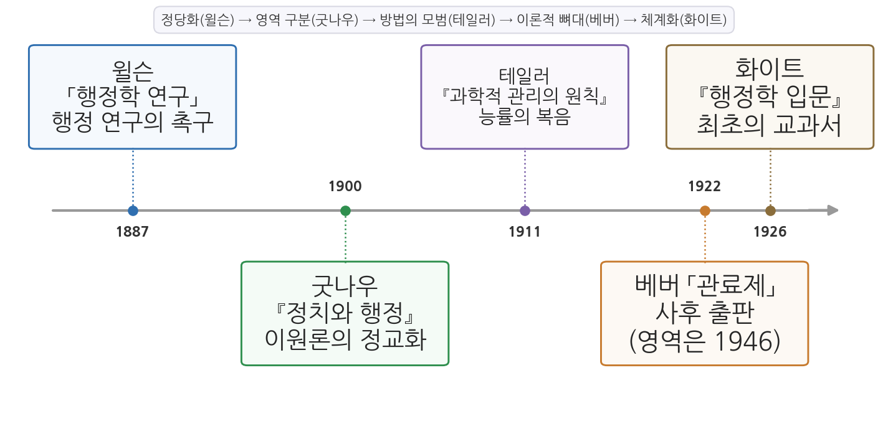
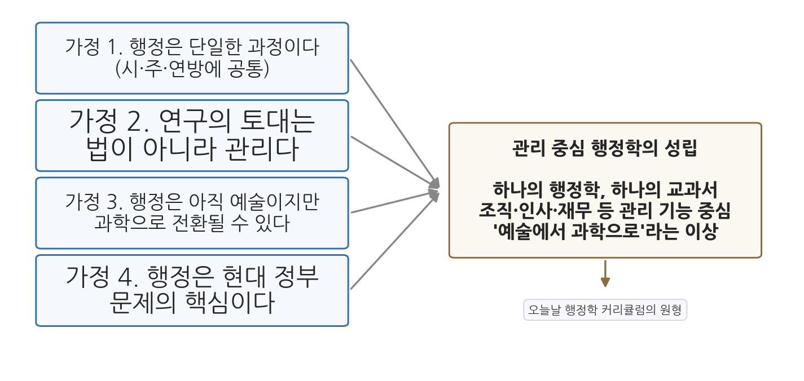

7주차 2차시. 관료제의 형성 (2): 화이트의 행정학 입문: 최초의 교과서
공공 행정이란 국가의 목적을 이루기 위해 사람과 물자를 관리하는 일이다. (레너드 화이트, 『행정학 입문』)
이 장에서 배우는 것
지금 여러분의 책상 위에 있는 행정학 개론서를 떠올려 보자. 목차를 넘기면 조직, 인사, 재무, 정책이 차례로 나온다. 너무 자연스러워서 질문거리가 되지 않는 이 구성에도 시작이 있었다. 1926년 이전에는 "행정학 교과서"라는 물건 자체가 세상에 없었다. 대학에서 정부를 가르치는 교재는 헌법과 법률 이야기로 가득했고, 정부가 실제로 어떻게 굴러가는지, 사람을 어떻게 뽑고 돈을 어떻게 쓰고 조직을 어떻게 짜는지는 몇 쪽짜리 장으로 스쳐 지나갈 뿐이었다.
그 공백을 처음 채운 사람이 미국의 정치학자 레너드 화이트(Leonard D. White)다. 그의 『행정학 입문(Introduction to the Study of Public Administration)』(1926)은 행정학이라는 분과의 최초 교과서로 꼽히며, 행정이 강의실에서 가르치고 배울 수 있는 독립된 학문임을 선언한 책이다. 교과서 한 권의 출간이 왜 사건인가. 어떤 지식이 교과서로 묶인다는 것은, 그 지식에 표준적인 범위와 순서가 생기고, 그것을 배운 사람들이 하나의 직업 집단과 학문 공동체를 이루기 시작한다는 뜻이기 때문이다. 이번 차시는 한 권의 책이 학문을 제도화하는 장면을 읽는다.
1차시와의 연결도 분명하다. 베버가 근대 행정의 뼈대(관료제)를 이론으로 그렸다면, 화이트는 그 뼈대 위에서 일하는 법(관리)을 학문으로 묶었다. 베버의 여섯째 특징을 기억하는가. 사무의 관리는 학습 가능한 규칙을 따른다고 했다. 화이트의 교과서는 바로 그 "학습 가능한 규칙"을 가르치겠다는 기획이다.
이 장에서는 구체적으로 다음을 배운다.
- 화이트라는 학자와 1926년이라는 시점의 의미
- 원전 강독: 서문의 문제의식과 행정 연구의 네 가지 가정
- 원전 강독: 행정의 정의, 행정 과정의 통일성, 행정 현장의 모습
- 원전 강독: 확대되는 국가와 직업공무원제의 수용
- 관리 중심 행정학이 성립한 과정과 그 의미
- 현대적 함의: 오늘날 행정학 교육의 원형
이 장은 하나의 질문을 따라간다. "행정학은 어떻게 한 권의 책으로 묶이며 학문이 되었는가?"
2.1 화이트와 1926년의 자리를 확인한다 → 2.2 서문에서 네 가지 가정을 읽는다 → 2.3 행정의 정의와 통일성, 그리고 행정 현장을 읽는다 → 2.4 확대되는 국가와 관료제 수용론을 읽는다 → 2.5 관리 중심 행정학의 성립을 정리한다 → 2.6 행정학 교육의 원형이라는 유산을 살핀다.
2.1 화이트와 행정학의 제도화: 1926년이라는 시점
레너드 화이트(1891-1958)는 미국의 정치학자이자 행정사학자로, 경력의 대부분을 시카고 대학교에서 보냈다. 강단에만 머문 학자는 아니었다. 1934년부터 1937년까지 연방 인사위원회 위원으로 일하며 실적주의 인사행정의 현장을 직접 다루었다. 그는 미국 행정의 역사를 시기별로 추적한 행정사 연작(연방주의 시대, 제퍼슨 시대, 잭슨 시대, 공화당 시대)으로도 유명하며, 마지막 저작 『The Republican Era: 1869-1901』는 그의 사후인 1959년 퓰리처상을 받았다. 행정 제도를 하루아침의 발명이 아니라 역사 속에서 누적된 변화로 본 것, 과거의 선택이 이후의 경로를 제약한다는 감각은 그의 학문 전체를 관통한다.
1926년이라는 출간 시점을 계보 위에 놓아 보자. 4-5주차에서 읽었듯 우드로 윌슨은 1887년의 논문으로 행정을 연구해야 한다고 촉구했고, 프랭크 굿나우는 1900년 『정치와 행정』으로 정치와 행정의 기능 구분을 정교화했다. 6주차의 프레더릭 테일러는 1911년 『과학적 관리의 원칙』으로 관리에 과학이 가능하다는 믿음을 퍼뜨렸고, 뉴욕시정연구소를 비롯한 행정조사운동은 그 믿음을 정부 개혁의 현장에서 실험했다. 즉 1926년까지 행정학에는 정당화(윌슨), 영역 구분(굿나우), 방법의 모범(테일러), 실천 현장(시정연구소)이 갖추어져 있었다. 없던 것은 이 모든 것을 학생에게 가르칠 수 있게 묶어 낸 체계였다. 윌슨이 행정학을 학문 분야이자 전문 직업으로 정당화하는 근거를 제공했다면, 그 초기 목표를 명확한 형태로 제시한 것은 화이트의 몫이었다.

그림 7-3은 이 계보를 연표로 그린 것이다. 왼쪽에서 오른쪽으로, 행정 연구를 촉구한 윌슨의 논문(1887)에서 시작해 굿나우의 이원론(1900), 테일러의 과학적 관리(1911), 베버의 관료제 분석 사후 출판(1922)을 거쳐 화이트의 첫 교과서(1926)에 이르는 40년의 흐름을 확인할 수 있다. 여기서 알 수 있는 것은 최초의 교과서가 어느 날 갑자기 나온 천재의 작품이 아니라, 한 세대에 걸쳐 쌓인 논문과 운동과 실험이 도달한 결절점이라는 사실이다.
『행정학 입문』은 이후 판을 거듭하며 40여 년간 행정학에서 가장 영향력 있는 저작의 하나로 남았다. 한 분야의 첫 교과서가 그 분야의 표준 문법이 된 것이다.
2.2 원전 강독 (1): 서문과 네 가지 가정
눈감은 교과서들
화이트는 서문에서 자신이 책을 쓰는 이유, 곧 기존 학계의 공백을 이렇게 고발한다.
"흥미롭게도 미국의 정치 제도를 논평한 사람들 가운데, 법률가의 관점을 빼면 행정 체계를 체계적으로 분석한 사람은 없었다. 불과 몇 해 전까지도 교과서들은 이 거대한 영역, 곧 정부의 가장 중요한 문제들과 매혹적인 관심사들로 가득한 영역에 고집스럽게 눈을 감고 있었으며, 오늘날에도 이 주제를 몇 쪽짜리 장으로 무심하게 다룬다. 그러나 행정이 '전문가들이 원칙에 합의하고 나면 서기들이 실무적 세부사항을 정리하면 되는 문제'라고 주장할 사람은 이제 아무도 없다."
무슨 말인가. 두 가지 고발이 겹쳐 있다. 하나는 무관심이다. 정치학 교과서들이 헌법과 제도의 큰 그림만 다루고 행정이라는 거대한 영역을 외면해 왔다는 것이다. 다른 하나는 관점의 편향이다. 그나마 행정을 다룬 사람들은 법률가였고, 행정을 법의 눈으로만 보았다는 것이다. 따옴표 안의 구절, 행정은 서기들이 정리할 세부사항이라는 말은 윌슨의 1887년 논문에서 온 표현이다. 실제로 화이트는 서문에서 윌슨의 논문을 직접 인용하며, 미국이 건전한 행정의 중요성을 오래 간과해 온 이유를 설명한 "한 편의 뛰어난 논문"이라 평가한다. 4주차에서 읽은 텍스트가 여기서 최초의 교과서의 주춧돌로 다시 등장하는 것이다.
왜 중요한가. 학문의 역사에서 새 분야는 흔히 "지금까지 아무도 이것을 제대로 다루지 않았다"는 선언으로 문을 연다. 화이트는 그 선언과 함께, 자기 작업의 어려움도 숨기지 않는다. 방대한 사실의 바다에서 무차별적 세부사항에 빠질 위험과 근거 없는 일반화에 삼켜질 위험 사이를, 지도 한 장 없이 항해해야 한다는 것이다. 첫 교과서를 쓴다는 일의 무게가 이 문장들에 담겨 있다.
네 가지 가정
서문의 핵심은 책 전체를 떠받치는 네 가지 가정의 선언이다.
"이 책은 적어도 네 가지 가정 위에 서 있다. 첫째, 행정은 단일한 과정이다. 어디에서 관찰하든 본질적 특성이 거의 같으므로, 시·주·연방 행정을 따로따로 연구하는 방식을 피한다. 둘째, 행정 연구는 법이 아니라 관리를 토대로 출발해야 한다. 그래서 이 책은 법원의 판례보다 미국경영협회의 활동에 더 주목한다. 셋째, 행정은 아직 주로 예술이다. 그러나 그것을 과학으로 바꾸려는 중요한 흐름에 주목한다. 넷째, 행정은 이미 현대 정부 문제의 핵심이 되었고, 앞으로도 계속 그러할 것이다."
무슨 말인가. 네 문장이 각각 하나의 결단이다. 첫째 가정은 연구 대상의 결단이다. 행정을 정부 수준별로 쪼개지 않고 하나의 공통 과정으로 본다. 둘째 가정은 접근법의 결단이다. 행정을 보는 눈을 법학에서 관리(management)로 바꾼다. 판례 대신 경영자 단체의 활동을 보겠다는 도발적인 문장이 그 전환을 상징한다. 셋째 가정은 학문적 야심의 결단이다. 행정은 지금 예술(개인의 솜씨와 경험)이지만 과학(체계적 지식)이 될 수 있고, 그 전환은 추구할 가치가 있다. 6주차에서 테일러가 노동자의 머릿속 요령을 법칙과 규칙으로 바꾸겠다고 했던 기획이 행정 전체로 확장된 것이다. 넷째 가정은 분야의 존재 이유에 대한 결단이다. 행정은 주변적 실무가 아니라 현대 정부 문제의 한복판이다.

그림 7-4는 네 가지 가정이 어떻게 하나의 학문 기획으로 모이는지 그린 것이다. 왼쪽의 네 상자가 각각의 가정이고, 오른쪽 상자가 그 귀결인 관리 중심 행정학이다. 여기서 알 수 있는 것은 네 가정이 임의의 나열이 아니라 서로를 요구한다는 점이다. 행정이 어디서나 같은 과정이어야(첫째) 보편적 관리 지식이 성립하고(둘째), 그런 지식이어야 과학화를 꿈꿀 수 있으며(셋째), 그 지식이 중요한 이유는 행정이 정부의 핵심이기 때문이다(넷째).
왜 중요한가. 이 네 가정은 이후 반세기 동안 행정학 정통 교리의 골격이 되었고, 훗날 벌어질 논쟁들의 표적이 되었다. 행정이 정말 어디서나 같은가(맥락과 문화의 문제), 관리가 정말 정치와 분리되는가(이원론의 문제), 행정의 과학이 정말 가능한가(사이먼과 왈도의 논쟁)는 모두 이 서문에 뿌리를 둔 질문들이다. 10주차와 11주차에서 그 논쟁들을 만나게 된다.
2.3 원전 강독 (2): 행정의 정의와 현장
행정 과정의 통일성
본문 제1장에서 화이트는 첫째 가정을 논증으로 편다.
"행정 과정에는 본질적 통일성이 있다. 시 정부에서 관찰하든 주 정부나 연방 정부에서 관찰하든 마찬가지이므로, 행정을 층위별로 나누어 분류하는 것은 적절하지 않다. (중략) 개인의 주도성을 키우는 일, 능력과 성실성을 갖춘 사람을 확보하는 일, 책임성, 조정, 재정 감독, 리더십, 사기 진작 같은 근본 문제들은 어디에서나 사실상 같다. 행정의 문제들 대부분은 지방정부나 주의 정치적 경계를 아랑곳하지 않는다. 보건 행정, 의료인 면허, 무역 규제, 황무지 개간이 어느 한 도시나 주에만 속한 문제라고 볼 수는 없다."
무슨 말인가. 구청의 인사 담당자와 중앙부처의 인사 담당자는 소속도 규모도 다르지만, "좋은 사람을 뽑아 일할 마음이 나게 하고 책임을 지운다"는 문제 앞에서는 같은 일을 하고 있다는 것이다. 전염병은 시 경계에서 멈추지 않으므로 보건 행정의 문제도 행정구역을 따라 나뉘지 않는다.
왜 중요한가. 이 통일성 명제가 있어야 "행정학"이라는 단수의 학문이 성립한다. 시 행정학, 주 행정학, 연방 행정학이 따로 있다면 교과서도 세 권이어야 한다. 하나의 행정 과정이 있기에 한 권의 입문서가 가능하다. 교과서의 존재 자체가 이 가정 위에 서 있는 셈이다.
관리로서의 행정
이어서 이 책에서 가장 유명한 문장, 행정의 정의가 나온다.
"공공 행정이란 국가의 목적을 이루기 위해 사람과 물자를 관리하는 일이다. 이 정의는 행정의 관리적 측면을 앞세우고 법률적·형식적 측면을 뒤로 물린다. 이렇게 보면 정부의 운영은 상업, 자선, 종교, 교육 같은 다른 사회 조직의 운영과 이어지며, 이들 모두에서 좋은 관리가 성공의 필수 요소임을 인정하게 된다. 다만 행정이 국가 목적의 형성에 어디까지 참여하는가라는 물음에는 답을 미루어 두고, 행정 행위의 본질적 성격에 관한 논쟁도 피한다."
무슨 말인가. 정의의 앞부분은 행정을 관리로 규정한다. 국가의 목적은 주어져 있고, 행정은 그 목적을 이루도록 사람(인적 자원)과 물자(물적 자원)를 움직이는 활동이다. 그렇게 보면 정부와 기업과 대학은 모두 "조직을 관리한다"는 공통 과제를 안고 있다. 화이트는 이어서 행정의 목표가 자원의 가장 효율적인 사용이라고 못 박는다. 좋은 행정은 낭비를 없애고, 경제성과 일하는 사람의 복지를 함께 고려하면서, 공적 목적을 신속하고 완전하게 이룬다는 것이다.
정의의 뒷부분은 그만큼 중요하다. 화이트는 "행정이 국가 목적의 형성에 어디까지 참여하는가"라는 물음에 답하지 않겠다고 명시한다. 5주차에서 본 정치-행정 이원론을 떠올려 보자. 굿나우처럼 국가의지의 표출(정치)과 집행(행정)을 이론으로 갈라 세우는 대신, 화이트는 그 경계 논쟁 자체를 옆으로 밀어 두고 관리라는 실질에 집중한다. 이원론을 강하게 주장하지도, 부정하지도 않는 이 신중함 덕분에 그의 책은 이원론의 잠재적 함정을 피했다는 평가를 받는다.
왜 중요한가. 무엇을 정의에 넣는가만큼, 무엇을 정의에서 빼는가도 학문의 방향을 정한다. 법을 뒤로 물림으로써 행정학은 행정법학과 구별되는 제 영역을 얻었고, 목적 형성의 문제를 미루어 둠으로써 정치학과의 소모적인 경계 분쟁을 피했다. 다만 미루어 둔 질문은 사라지지 않는다. 행정이 목적 형성에 참여하는 현실은 9주차에서 읽을 펜들턴 해링의 주제가 된다.
관리 중심 행정학(management-centered public administration)은 행정의 본질을 법 집행의 형식이 아니라 조직·인사·재무 등 자원 관리의 실질에서 찾고, 정부 수준과 조직 유형을 가로지르는 보편적 관리 지식을 추구하는 접근이다. 화이트의 『행정학 입문』이 그 원형을 세웠다.
행정의 현장: 대도시 보건국의 하루
정의가 추상적이라면, 화이트가 드는 예시는 놀랄 만큼 구체적이다.
"아침 9시, 직원들이 출근해 근태를 기록하고 자리에 앉아 일을 시작한다. 시민에게서, 현장 검사원에게서, 특별 부서에서 전화가 쉴 새 없이 걸려 오고, 창구에는 크고 작은 용무의 민원인이 몰린다. 전염병 위험을 알리는 전보가 도착하고, 부서 안의 회의와 부서 사이의 회의가 이어진다. 경찰관이 시료를 가져오고, 시민들은 검사 결과를 묻는다. (중략) 바깥에서 보면 혼란스럽기 짝이 없지만, 실제로는 업무가 잘게 나뉘어 전문 직원에게 배정되어 있고, 민원은 표준화된 절차에 따라 처리된다. 하급 직원이 일상 업무를 처리하는 동안, 중요한 문제는 상급자에게 올라간다."
무슨 말인가. 어느 대도시 보건국의 하루를 카메라로 찍듯 묘사한 장면이다. 겉보기의 혼란과 실제의 질서라는 대비가 축이다. 전화와 민원과 항의가 뒤엉킨 사무실이 굴러가는 이유는 분업(업무의 세분화와 전문 배정), 표준화(정해진 절차), 계층(일상 업무는 아래에서, 중요 문제는 위로)이라는 관리의 원리가 작동하기 때문이다. 눈 밝은 독자라면 여기서 1차시의 베버를 알아볼 것이다. 관할권, 규칙, 계서제가 이론의 언어였다면, 보건국의 하루는 같은 것의 현장 스케치다.
왜 중요한가. 화이트는 이 묘사에 역사적 원근법을 붙인다. 오늘의 보건국은 파피루스에 장부를 베껴 적던 고대 이집트 서기관의 세계와 멀어 보이지만, 군사·재정 같은 본질적 행정 기능의 목적은 예나 지금이나 같으며, 달라진 것은 과학이 제공한 물적 장비와 전문 지식이라는 것이다. 행정을 고대에서 현대로 이어지는 연속적 발전으로 보는 이 감각은 행정사학자 화이트의 면모이며, 이 교재가 1주차부터 고대 문명의 행정을 다룬 이유이기도 하다.
2.4 원전 강독 (3): 확대되는 국가와 직업공무원제
제1장 후반부에서 화이트는 렌즈를 넓혀, 행정이 왜 이 시대의 핵심 문제가 되었는지를 논한다. 배경은 산업혁명이다. 화이트에 따르면 산업의 확장, 교통과 통신의 발달, 도시화, 강력한 사회계급과 이익집단의 형성은 자유방임을 지탱할 수 없게 만들었고, 국가는 이제 사회적 협력과 규제의 주요 기관으로, 사회 개선 프로그램의 수단으로 받아들여지게 되었다. 국가의 과제가 모든 방향에서 확대되니, 그 과제를 집행할 행정의 범위도 함께 확장된다. 최저임금과 노동시간 규제, 각종 금지와 규제, 선거와 정당에 대한 규제가 모두 새로운 행정 업무가 되었다.
이 확대는 전문성의 문제를 낳는다. 화이트는 현대 정부 문제의 핵심이 행정이라고 단언하면서, 과거의 입법부는 정치적 윤리의 문제를 다룰 여유가 있었지만 오늘의 사안은 기술적 문제와 전문 지식을 요구한다고 말한다. 상하수도, 곡물 병해, 국립공원 예산 어느 것 하나 전문가 없이는 법률조차 만들 수 없으니, 행정 서비스의 전문가들이 곧 정부인 셈이라는 것이다. 그렇다면 그 전문가들을 어떻게 확보할 것인가. 여기서 화이트는 미국 독자들에게 가장 논쟁적일 결론에 도달한다.
"이제 공무원들이 마주하는 문제들은 범위가 넓고 성격이 기술적이며 해결이 절박하다. 적어도 관료제적 행정의 기본 요소들을 받아들이지 않고서는 국가가 스스로를 지탱하기 어렵다. 따라서 민주국가는 영구적 재직, 공직을 위한 특별한 훈련, 공무원의 직업적 관심, 국가에 대한 전적인 충성을 특징으로 하는 공무원 제도의 장점을 받아들여야 한다. 이것은 결코 민주주의에 맞서 독재를 옹호하는 말이 아니다. 민주주의가 고도로 조직된 행정 체제에서 자국의 정치 제도에 맞는 요소를 빌려 옴으로써, 자신의 목적과 프로그램을 더 효과적으로 이룰 수 있다는 뜻이다."
무슨 말인가. 영구적 재직, 특별한 훈련, 직업적 관심, 전적인 충성. 이 목록이 낯익지 않은가. 1차시에서 읽은 베버의 공무원상, 곧 종신직과 전문훈련과 직업(소명)으로서의 공직이 그대로 겹친다. 화이트는 유럽식 직업 관료제를 경계해 온 미국의 전통을 정면으로 마주하며, 민주주의가 관료제의 장점을 빌려 와야 한다고 주장한다. 그리고 곧바로 예상되는 반론에 답한다. 이것은 독재의 옹호가 아니라, 민주주의가 제 목적을 이루기 위한 수단의 차용이라는 것이다.
왜 중요한가. 여기서 7주차의 두 텍스트가 만난다. 베버가 유럽의 역사에서 추출한 관료제 이념형을, 화이트는 미국 민주주의가 수용해야 할 제도적 처방으로 번역하고 있다. 아마추어 명사 행정과 엽관제의 나라였던 미국이 직업공무원제로 이동하는 지적 정당화가 이 문단에 담겨 있다. 민주주의와 관료제라는 긴장 관계는 이후 행정학의 영원한 주제가 되며, 9주차(해링)와 11주차(왈도)에서 다른 각도로 반복된다.
유럽 대륙에서 행정 연구는 오랫동안 행정법학이었다. 국가의 행위는 법의 형식으로 이루어지므로, 행정을 안다는 것은 곧 행정법을 아는 것이었다. 화이트는 행정법의 존재 의의(사적 권리의 보호)를 인정하되, 그것과 공공 행정의 목적(공적 사무의 효율적 수행)을 구분했다. 법은 행정이 지켜야 할 테두리이지 행정의 내용이 아니라는 것이다. 이 구분 덕분에 행정학은 "무엇이 적법한가"를 넘어 "어떻게 하면 잘하는가"를 묻는 학문이 될 수 있었다. 다만 화이트 자신도 경고를 잊지 않았다. 정부 활동이 확장될수록 권한 남용을 막는 안전장치가 필요하며, 공무원의 오류와 편향의 위험이 있는 한 사적 권리의 보호는 정책 집행 못지않게 중요하다는 것이다. 효율과 통제의 이 이중 균형은 오늘날 행정학에서도 살아 있는 과제다.
2.5 관리 중심 행정학의 성립
이제 이 책이 만든 학문의 꼴을 정리해 보자. 세 가지 특징이 두드러진다.
첫째, 연구 대상이 바뀌었다. 헌법 조문과 판례가 아니라 살아 움직이는 조직, 곧 사람을 뽑고 예산을 쓰고 업무를 나누는 관리의 과정이 행정학의 대상이 되었다. 화이트가 서문에서 지난 20여 년간 쌓인 "정부 운영의 비즈니스적 측면"에 관한 방대한 문헌을 언급하듯, 그의 교과서는 시정연구소들과 개혁 운동이 축적한 자료를 분석적·비판적으로 종합한 것이다.
둘째, 학문의 이상이 정해졌다. 행정은 아직 예술이지만 과학이 되어 가는 중이라는 셋째 가정은, 테일러의 과학적 관리 운동을 행정학의 방법적 모범으로 받아들인 것이다. 화이트도 과학적 관리 운동이 공공 행정 개혁을 크게 자극했으며, 미국 행정이 한 세기의 방치로 생긴 낡은 틀에서 벗어나야 한다는 인식이 분명해졌다고 쓴다.
셋째, 그러면서도 처방전의 유혹을 경계했다. 화이트의 책은 행정학을 "이렇게 하면 된다"는 처방적 요리책으로 다루지 않았다는 점에서 주목받는다. 그는 행정학이 무엇보다 현실에 밀착해야 하는 연구 분야임을 인식했다. 당시의 행정 실무자 대부분은 전문 교육을 받지 못했으면서도 행정이 경험으로 익히는 예술이라는 믿음이 강한 사람들이었고, 교과서는 그 현실을 직시해야 했다.
『행정학 입문』을 "최초의 교과서"라 부를 때, 그 이전에 행정 지식이 없었다는 뜻으로 읽으면 안 된다. 윌슨과 굿나우의 논저, 시정연구소들의 조사 보고서, 과학적 관리 문헌이 이미 쌓여 있었다. 화이트의 공로는 무에서 유를 만든 것이 아니라, 흩어져 있던 지식을 학생이 처음부터 끝까지 배울 수 있는 체계로 묶은 것이다. 또 하나. 화이트가 행정과 정치의 경계 문제 같은 근본 질문을 "피했다"는 것은 그 질문이 해결되었다는 뜻이 아니다. 뒤로 미루어진 질문들은 행정국가가 팽창하면서 되돌아온다. 그 귀환이 이 교재 후반부(9-11주차)의 이야기다.
2.6 현대 행정에의 함의: 행정학 교육의 원형
이 낡은 교과서가 오늘의 우리와 무슨 상관인가. 세 가지 유산을 짚는다.
첫째, 여러분이 배우는 행정학 커리큘럼의 원형이 여기서 나왔다. 조직론, 인사행정론, 재무행정론이 행정학과의 기본 과목으로 자리 잡은 것은, 행정의 본질을 인적·물적 자원의 관리로 본 화이트의 정의가 교육의 틀로 굳어진 결과다. 행정학 개론서가 법 조문 해설이 아니라 관리 기능의 순서로 짜여 있는 것 자체가 1926년의 결단을 물려받은 모습이다. 한국의 행정학 교육도 1950년대 말 미국 행정학을 받아들이며 제도화되었고, 그때 수입된 틀이 바로 이 관리 중심의 틀이었다.
둘째, 행정의 통일성 가정은 오늘날에도 시험대에 올라 있다. 중앙부처와 기초자치단체와 공기업의 관리가 본질적으로 같다는 전제가 있기에, 하나의 행정학 학위와 하나의 공무원 시험이 여러 정부 수준을 가로질러 통용된다. 그러나 지방화 시대에 "행정은 어디서나 같은가"라는 질문은 다시 열려 있다. 지역 맥락을 아는 지방 인재와 보편 관리 지식을 갖춘 일반행정가 사이에서 균형을 찾는 문제는, 첫째 가정을 오늘의 조건에서 다시 검토하는 일이다.
셋째, 예술에서 과학으로라는 셋째 가정은 증거기반 행정의 먼 조상이다. 행정을 경험과 감이 아니라 체계적 지식으로 만들려는 기획은, 오늘날 데이터에 근거한 정책 설계와 평가로 이어지고 있다. 물론 그 사이에는 행정의 과학이 정말 가능한지를 둘러싼 뜨거운 논쟁(10주차의 사이먼, 11주차의 왈도)이 놓여 있다. 화이트가 조심스럽게 "흐름에 주목한다"고만 썼던 이유를, 그 논쟁을 읽으며 다시 생각하게 될 것이다.
요약
레너드 화이트는 시카고 대학교에서 활동하며 연방 인사위원회 위원을 지낸 정치학자이자 행정사학자로, 1926년 『행정학 입문』을 펴내 행정학 최초의 교과서를 세상에 내놓았다. 이 책은 윌슨의 정당화(1887), 굿나우의 이원론(1900), 테일러의 과학적 관리(1911), 행정조사운동으로 이어진 40년 축적의 결절점이다. 서문의 네 가지 가정, 곧 행정은 단일한 과정이라는 것, 연구의 토대는 법이 아니라 관리라는 것, 행정은 예술이지만 과학으로 전환될 수 있다는 것, 행정이 현대 정부 문제의 핵심이라는 것이 책 전체와 이후 행정학 정통 교리의 골격을 이룬다. 본문은 행정을 국가 목적 달성을 위한 사람과 물자의 관리로 정의하되 국가 목적 형성에의 참여 문제는 미루어 두어 이원론의 함정을 피했고, 보건국의 하루라는 현장 묘사로 분업·표준화·계층의 관리 원리를 보여 주었으며, 확대되는 국가에는 직업공무원제의 수용이 필요하고 이는 독재의 옹호가 아니라 민주주의의 수단이라고 논증했다. 그렇게 성립한 관리 중심 행정학은 오늘날 행정학 커리큘럼(조직·인사·재무)의 원형이 되었으며, 행정의 통일성과 과학화라는 가정은 지금도 검토가 계속되는 살아 있는 질문으로 남아 있다.
토론·복습 문제
7-5. 원전 구절 해석. 다음 구절을 읽고 물음에 답하라. "공공 행정이란 국가의 목적을 이루기 위해 사람과 물자를 관리하는 일이다. 이 정의는 행정의 관리적 측면을 앞세우고 법률적·형식적 측면을 뒤로 물린다. (중략) 다만 행정이 국가 목적의 형성에 어디까지 참여하는가라는 물음에는 답을 미루어 두기로 한다." (a) 이 정의가 "앞세운 것"과 "뒤로 물린 것", 그리고 "미루어 둔 것"을 각각 밝히라. (b) 미루어 둔 질문이 왜 언젠가 되돌아올 수밖에 없는지, 공무원이 시행령과 지침을 만드는 오늘의 현실을 들어 논해 보라.
7-6. 네 가지 가정 비판. 화이트의 네 가지 가정 가운데 오늘날 가장 흔들리고 있다고 생각하는 것 하나를 골라, 그렇게 판단한 근거를 현대 행정의 사례와 함께 제시하라. 반대로 가장 굳건히 살아남았다고 생각하는 가정도 하나 골라 이유를 밝히라.
7-7. 기말 대비 서술형. 화이트 『행정학 입문』의 네 가지 가정을 서술하고, 이 책이 관리 중심 행정학의 성립과 행정학 교육의 제도화에 미친 영향을 베버의 관료제 이론과의 관계를 포함하여 논의하시오.
7-8. 두 텍스트의 대화. 베버는 관료제화를 피할 수 없는 운명으로 진단하면서 쇠우리의 위험을 경고했고, 화이트는 민주국가가 관료제의 장점을 적극 받아들여야 한다고 처방했다. 두 태도의 차이가 어디에서 오는지(학자의 역할에 대한 생각, 유럽과 미국이라는 맥락, 진단과 처방이라는 목적의 차이 등) 토론해 보라. 여러분이 오늘의 한국에서 글을 쓴다면 어느 쪽에 더 가까운 태도를 취하겠는가.